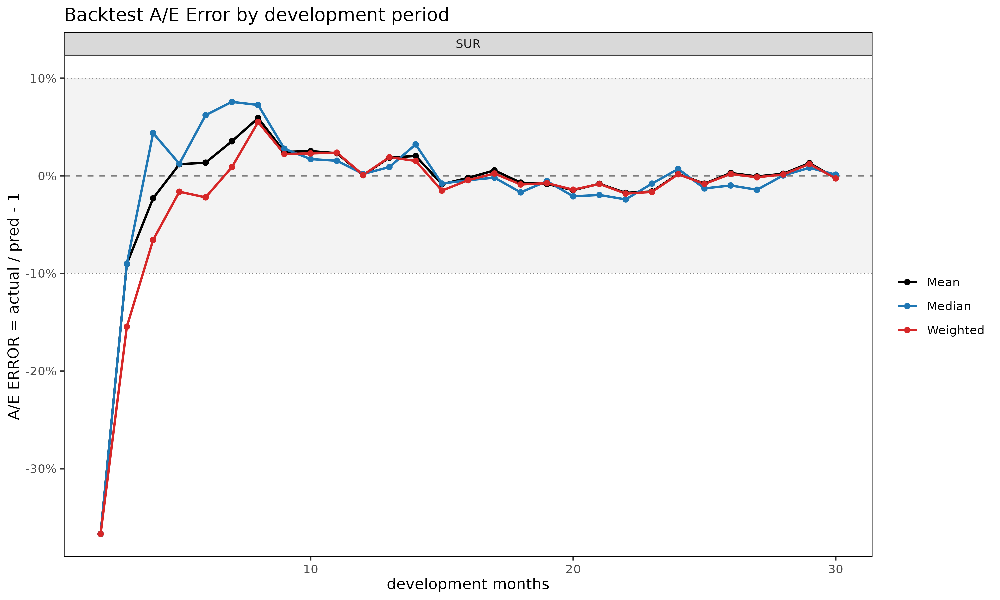
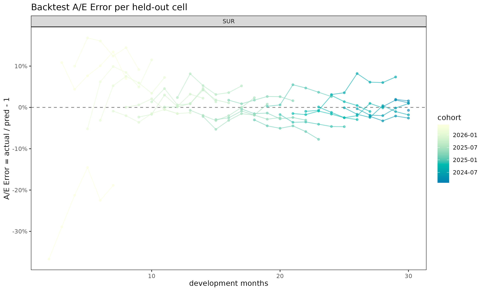
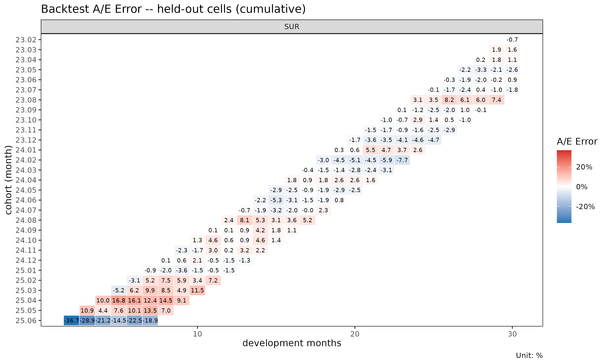

영어 원본 보기: Backtesting projections against held-out diagonals
동기
준비금 산출과 추정(projection) 방법은 관측된 자료에 적합되지만,
실무적 가치는 과거 valuation 시점(평가 시점)에서 그 방법이 어떻게
작동했을지에 달려 있다. backtest() 는 triangle 에서
holdout 으로 지정한 만큼의 최근 대각선 (calendar
diagonal)을 마스킹한 뒤, 이전 부분에 모형을 재적합하고, 그 추정값을
마스킹된 셀의 실제값과 비교함으로써 이 질문에 답한다. 이는 경과 기간
단위 홀드아웃이 아니라 대각선 단위 홀드아웃인데, “K 개월 전
valuation 시점에서 모형은 무엇이라 말했을까?” 를 모사하기 때문이다. 셀
단위 지표는 AEG (Actual-Expected Gap, 실제-예측 차이) 이며, 표준
actuarial A/E 관용에 맞춰
로 정의한다. 양수는 과소 추정 (실제가 기대보다 큼), 음수는 과대 추정을
의미한다.
기본 사용법
library(lossratio)
data(experience)
exp <- as_experience(experience)
tri_sur <- build_triangle(exp[cv_nm == "SUR"], cv_nm)
bt <- backtest(tri_sur, holdout = 6L)
print(bt)
#> <Backtest>
#> fit_fn : fit_lr
#> value_var : clr
#> holdout : 6 calendar diagonals
#> held-out : 123 cells
#> AEG : mean -13.05% / median -7.28%기본 적합 함수는 단계 적응형(stage-adaptive, SA) 손해율 추정
(fit_lr(method = "sa")) 이며, 기본 비교 컬럼은
value_var = "clr" 이다 (누적 손해율). 반환되는 객체는
"Backtest" 리스트이며, 주요 슬롯은 다음과 같다.
-
aeg— 셀 단위data.table(cohort, dev, actual, pred, aeg, calendar_idx). -
col_summary—dev별로 집계된 AEG. -
diag_summary— 대각선별로 집계된 AEG. -
masked— 적합에 사용된 triangle (최근 대각선이 제거됨). -
fit—fit_fn이 반환한 적합 객체 (LRFit또는CLFit).
summary(bt) 는 호출 메타데이터와 함께 두 요약 표를
출력한다.
마스킹 후 검증 범위
holdout 만큼의 최근 대각선을 마스킹하면 Triangle 의
우하단이 짧아진다. chain ladder 는 마스킹된 데이터에 남아 있는 가장 큰
dev 까지만 추정값을 만들 수 있으므로, 그 범위를 넘어가는 셀 — 가장
오래된 코호트의 후기 dev 셀들 — 은 비교할 추정값이 아예 생성되지 않는다.
이런 셀은 자동으로 제외되어, bt$aeg 에는 실제값과 추정값이
모두 존재하는 셀만 남는다.
실무적 함의: holdout 이 커질수록 가장 오래된 코호트의
후기 dev 영역이 가장 먼저 검증에서 빠진다. 이 영역은 chain ladder 가
외삽 (관측 범위 너머로의 추정) 에 의존하는 부분으로, 본래 검증이 가장
필요한 곳인데 오히려 가장 빨리 사라진다.
출력 해석
col_summary — 경과 기간별 체계적 편향.
특정 dev 에서 AEG 의 부호가 일관되게 나타나면, 그 성숙도에서 모형과 자료
사이에 구조적 불일치가 있음을 시사한다. 초기 dev 의 양의 값은 보통
부풀려진 link factor 를 반영하고, 후기 dev 의 값은 꼬리
미보정(miscalibration) 을 시사한다.
head(bt$col_summary, 8)
#> cv_nm dev n aeg_mean aeg_med aeg_wt
#> <char> <int> <int> <num> <num> <num>
#> 1: SUR 2 1 -0.2210212 -0.2210212 -0.2210212
#> 2: SUR 3 2 -0.6437701 -0.6437701 -0.6163919
#> 3: SUR 4 3 -0.3511641 -0.1162380 -0.3498190
#> 4: SUR 5 4 -0.3150824 -0.2157648 -0.3172642
#> 5: SUR 6 5 -0.4607816 -0.4015157 -0.4605004
#> 6: SUR 7 6 -0.3179501 -0.3459763 -0.3294385
#> 7: SUR 8 6 -0.3943149 -0.4362693 -0.3951618
#> 8: SUR 9 6 -0.3184528 -0.3718590 -0.3083244aeg_mean 은 셀 단위 AEG 의 평균, aeg_med 는
중앙값, aeg_wt = sum(actual - pred) / sum(pred) 는 노출
가중 pooled A/E ratio 에서 1 을 뺀 값이다. 세 컬럼을 비교하면 소수의 큰
셀이 결과를 지배하는지 (aeg_wt 가 aeg_med 와
크게 다른 경우) 또는 편향이 균일한지 식별할 수 있다.
diag_summary — 대각선 효과(calendar-year
effect). 그 외에는 편향이 없는 출력에서 단 하나의 대각선만
나쁘게 나타난다면, 정적 chain ladder 가 구조상 볼 수 없는 calendar 사건
(요율 변경, 보험금 처리 방식의 변화, 일회성 충격) 을 가리킨다.
bt$diag_summary
#> cv_nm calendar_idx n aeg_mean aeg_med aeg_wt
#> <char> <int> <int> <num> <num> <num>
#> 1: SUR 25 23 -0.1066364 -0.03677298 -0.07019853
#> 2: SUR 26 22 -0.1401734 -0.05189725 -0.11335460
#> 3: SUR 27 21 -0.1090998 -0.05853744 -0.10418242
#> 4: SUR 28 20 -0.1311208 -0.07720194 -0.12745825
#> 5: SUR 29 19 -0.1621096 -0.15960239 -0.16741775
#> 6: SUR 30 18 -0.1402920 -0.10632300 -0.16505109대각선을 가로지르는 단조로운 표류 (위 SUR 예시처럼
25, ..., 30 으로 가면서 AEG 가 점점 더 양수가 되는 패턴) 는
보통 가장 최근 대각선의 실적이 이전 코호트의 link factor 가 함의하는
수준보다 더 높게 진행되고 있음 — 즉 정적 모형이 흡수하지 못한 regime
shift 가 발생했음을 시사한다.
aeg — 셀 단위 이상치. 특정 cohort × dev
셀을 진단하려면 bt$aeg 를 직접 살펴본다.
head(bt$aeg, 5)
#> Key: <cv_nm>
#> cv_nm cohort dev value_actual value_pred aeg calendar_idx
#> <char> <Date> <int> <num> <num> <num> <int>
#> 1: SUR 2023-05-01 24 1.030446 1.156866 -0.109277544 25
#> 2: SUR 2023-06-01 23 1.175862 1.182519 -0.005629942 25
#> 3: SUR 2023-06-01 24 1.198728 1.292790 -0.072758288 26
#> 4: SUR 2023-07-01 22 1.105530 1.113031 -0.006738881 25
#> 5: SUR 2023-07-01 23 1.106120 1.118137 -0.010746990 26플롯 데모
"Backtest" 에는 네 가지 플롯 뷰가 등록되어 있다.
plot(bt, type = "col") # dev 별 AEG (점 + 0 기준 점선)
plot(bt, type = "diag") # 대각선별 AEG
plot(bt, type = "cell") # dev 위에 그려진 코호트별 AEG 궤적
plot_triangle(bt) # 홀드아웃 영역에 대한 발산형 팔레트 히트맵
type = "col" 은 경과 기간별 체계적 편향을 살피기에
적합하다. type = "diag" 는 대각선 효과(calendar-year drift)
를 드러낸다. type = "cell" 은 어느 코호트가 편향에
기여하는지를 노출한다. plot_triangle() 은 셀 단위 AEG 값을
기저 적합의 plot_triangle() 과 동일한 삼각 배치 위에
올려놓으며, 빨간색이 과소 추정 (actual > pred) 을 표시하는 빨강/파랑
발산형 팔레트를 사용한다.
홀드아웃 선택
holdout 은 다음 두 가지 상충 효과의 균형을 잡도록
선택한다.
- 너무 큰 경우: 마스킹된 triangle 이 가장 최근 경험을 잃게 되어, 가장 오래된 코호트들은 후기 경과 기간에서 도달 가능 셀이 거의 또는 전혀 없게 된다. 검증 집합이 불균등하게 줄어들며 초기 dev 쪽으로 편향된다.
- 너무 작은 경우: 홀드아웃 영역이 얇은 평행사변형 밴드에 불과해, 체계적 패턴을 드러내기에 충분한 셀을 포함하지 못할 수 있다.
월별 triangle 에서는 holdout = 6L (반년) 이 일반적이며,
24~30 개의 대각선 이력이 있는 triangle 에서는 더 강한 검증을 위해
holdout = 12L (1년) 을 사용한다.
적합 함수 선택
기본값인 fit_fn = fit_lr (method = “sa”, value_var =
“clr”) 은 손해율 관점의 진단을 직접 제공한다. fit_lr 의
method 와 value_var 를 바꾸면 다양한 변형을 백테스트할 수
있다.
value_var에 대한 참고.backtest(value_var = ...)는 스코어 컬럼(score column) 이다. 즉, 셀 단위로 실제값과 추정값을 비교하는 대상 컬럼을 가리킨다. 이는 chain ladder 적합 함수의value_var인자 — triangle 에서 어느 컬럼을 누적해 쌓을지 선택하는 인자 — 와 일반적으로 같은 개념이 아니다.fit_fn = fit_cl일 때는backtest()가value_var를 그대로fit_cl()에 전달하므로 두 의미가 일치한다. 반면fit_fn = fit_lr일 때fit_lr자체는value_var를 받지 않으며 — 항상closs,crp,clr세 컬럼을 동시에 추정한다 —value_var는fit_lr$full의 세 추정 컬럼 중 어느 것을 홀드아웃 실제값과 비교할지를 선택하는 역할만 한다. 매핑은 다음과 같다.
value_var |
fit_lr$full 의 비교 컬럼 |
|---|---|
"closs" |
loss_proj |
"crp" |
exposure_proj |
"clr" |
lr_proj |
bt_sa_clr <- backtest(tri_sur, holdout = 6L) # default
bt_sa_loss <- backtest(tri_sur, holdout = 6L, value_var = "closs")
bt_ed_clr <- backtest(tri_sur, holdout = 6L, method = "ed")
bt_cl_clr <- backtest(tri_sur, holdout = 6L, method = "cl")
print(bt_sa_clr)
#> <Backtest>
#> fit_fn : fit_lr
#> value_var : clr
#> holdout : 6 calendar diagonals
#> held-out : 123 cells
#> AEG : mean -13.05% / median -7.28%clr 을 백테스팅하는 것이 보통 더 유익한 진단이 된다.
손해율은 단위가 없고 차원이 없어 규모가 크게 다른 코호트 간에도 일관되게
비교 가능하므로, aeg_mean 과 aeg_med 가
triangle 전체에서 일관된 의미를 가진다. 반면 closs 를
백테스팅하면 결과가 홀드아웃 대각선에서 가장 큰 코호트 쪽으로
가중된다.
단일 컬럼만 추정하면 되는 경우 (raw 누적손해 등 손해율 형태가 아닌
단일 지표) fit_fn = fit_cl 도 지원한다.
같이 보기
-
vignette("chain-ladder")—fit_cl()참고. -
vignette("loss-ratio-methods")—fit_lr()및"sa","ed","cl"방법. -
?backtest,?plot.Backtest,?plot_triangle.Backtest.